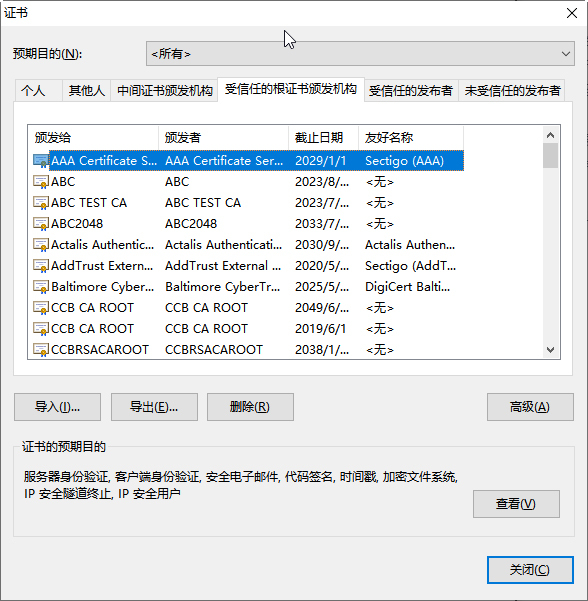
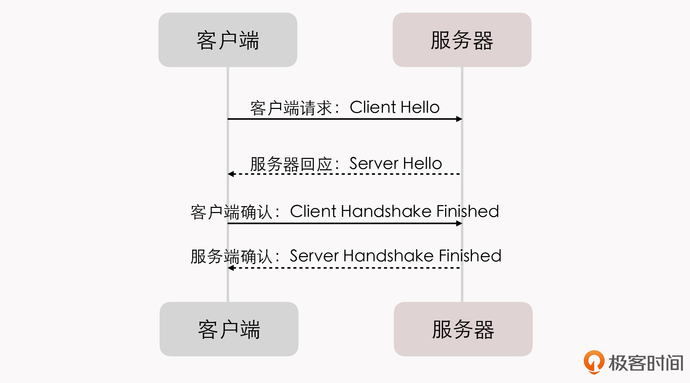

- 00 _导读 _ 什么是“The Fenix Project”？.md
- 00 开篇词 _ 如何构建一个可靠的分布式系统？.md
- 01 _ 原始分布式时代：Unix设计哲学下的服务探索.md
- 02 _ 单体系统时代：应用最广泛的架构风格.md
- 03 _ SOA时代：成功理论与失败实践.md
- 04 _ 微服务时代：SOA的革命者.md
- 05 _ 后微服务时代：跨越软件与硬件之间的界限.md
- 06 _ 无服务时代：“不分布式”云端系统的起点.md
- 07 _ 远程服务调用（上）：从本地方法到远程方法的桥梁.md
- 08 _ 远程服务调用（下）：如何选择适合自己的RPC框架？.md
- 09 _ RESTful服务（上）：从面向过程编程到面向资源编程.md
- 10 _ RESTful服务（下）：如何评价服务是否RESTful？.md
- 11 _ 本地事务如何实现原子性和持久性？.md
- 12 _ 本地事务如何实现隔离性？.md
- 13 _ 全局事务和共享事务是如何实现的？.md
- 14 _ 分布式事务之可靠消息队列.md
- 15 _ 分布式事务之TCC与SAGA.md
- 16 _ 域名解析系统，优化HTTP性能的第一步.md
- 17 _ 客户端缓存是如何帮助服务器分担流量的？.md
- 18 _ 传输链路，优化HTTP传输速度的小技巧.md
- 19 _ 如何利用内容分发网络来提高网络性能？.md
- 20 _ 常见的四层负载均衡的工作模式是怎样的？.md
- 21 _ 服务端缓存的三种属性.md
- 22 _ 分布式缓存如何与本地缓存配合，提高系统性能？.md
- 23 _ 认证：系统如何正确分辨操作用户的真实身份？.md
- 24 _ 授权（上）：系统如何确保授权的过程可靠？.md
- 25 _ 授权（下）：系统如何确保授权的结果可控？.md
- 26 _ 凭证：系统如何保证与用户之间的承诺是准确完整且不可抵赖的？.md
- 27 _ 保密：系统如何保证敏感数据无法被内外部人员窃取滥用？.md
- 28 _ 传输（上）：传输安全的基础，摘要、加密与签名.md
- 29 _ 传输（下）：数字证书与传输安全层.md
- 30 _ 验证：系统如何确保提交给服务的数据是安全的？.md
- 31 _ 分布式共识（上）：想用好分布式框架，先学会Paxos算法吧.md
- 32 _ 分布式共识（下）：Multi Paxos、Raft与Gossip，分布式领域的基石.md
- 33 _ 服务发现如何做到持续维护服务地址在动态运维中的时效性？.md
- 34 _ 路由凭什么作为微服务网关的基础职能？.md
- 35 _ 如何在客户端实现服务的负载均衡？.md
- 36 _ 面对程序故障，我们该做些什么？.md
- 37 _ 要实现某种容错策略，我们该怎么做？.md
- 38 _ 限流的目标与模式.md
- 39 _ 如何构建零信任网络安全？.md
- 40 _ 如何实现零信任网络下安全的服务访问？.md
- 41 _ 分布式架构中的可观测到底说的是什么？.md
- 42 _ 分析日志真的没那么简单.md
- 43 _ 一个完整的分布式追踪系统是什么样子的？.md
- 44 _ 聚合度量能给我们解决什么问题？.md
- 45 _ 模块导学：从微服务到云原生.md
- 46 _ 容器的崛起（上）：文件、访问、资源的隔离.md
- 47 _ 容器的崛起（下）：系统、应用、集群的封装.md
- 48 _ 以容器构建系统（上）：隔离与协作.md
- 49 _ 以容器构建系统（下）：韧性与弹性.md
- 50 _ 应用为中心的封装（上）：Kustomize与Helm.md
- 51 _ 应用为中心的封装（下）：Operator与OAM.md
- 52 _ Linux网络虚拟化（上）：信息是如何通过网络传输被另一个程序接收到的？.md
- 53 _ Linux网络虚拟化（下）：Docker所提供的容器通讯方案有哪些？.md
- 54 _ 容器网络与生态：与CNM竞争过后的CNI下的网络插件生态.md
- 55 _ 谈谈Kubernetes的存储设计理念.md
- 56 _ Kubernetes存储扩展架构：一个真实的存储系统如何接入或移除新存储设备？.md
- 57 _ Kubernetes存储生态系统：几种有代表性的CSI存储插件的实现.md
- 58 _ Kubernetes的资源模型与调度器设计.md
- 59 _ 透明通讯的涅槃（上）：通讯的成本.md
- 60 _ 透明通讯的涅槃（下）：控制平面与数据平面.md
- 61 _ 服务网格与生态：聊聊服务网格的两项标准规范.md
- 63 _ 基于Spring Boot的单体架构.md
- 64 _ 基于Spring Cloud的微服务架构.md
- 65 _ 基于Kubernetes的微服务架构.md
- 66 _ 基于Istio的服务网格架构.md
- 67 _ 基于云计算的无服务架构.md
- 春节特别放送（上）_ 有的放矢，事半功倍.md
- 春节特别放送（下）_ 积累沉淀，知行合一.md
- 用户故事 _ 詹应达：持续成长，不惧未来.md
- 结束语 _ 程序员之路.md
- 结课测试 _ 一套习题，测出你的掌握程度.md
29 _ 传输（下）：数字证书与传输安全层
你好，我是周志明。
上节课，我们花了很多时间来学习传输安全层中的摘要、加密和签名的主要用途和差别，在最后，我给你留了一个问题：数字签名需要分发公钥，但在网络世界里，“公开”具体是一种什么操作？如何保证每一个获取公钥的服务，拿到的公钥就是授权服务器所希望它拿到的呢？在网络中一切皆不可信任的假设前提下，任何传输都有可能被篡改，那这个问题能够解决吗？
答案其实是可以的，这就是数字证书要解决的问题。
所以接下来，我们就先从数字证书如何达成共同信任开始说起，一起来了解下在传输安全的过程中，数字证书与传输安全层的相关实现细节。
如何通过数字证书达成共同信任？
有了哈希摘要、对称和非对称加密之后，签名还是无法保证负载中的信息不可篡改、不可抵赖。所以，当我们无法以“签名”的手段来达成信任时，就只能求助于其他途径。
现在，你不妨想想真实的世界中，我们是如何达成信任的。其实不外乎以下这两种：
基于共同私密信息的信任- 比如某个陌生号码找你，说是你的老同学，生病了要找你借钱。你能够信任他的方式是向对方询问一些你们两个应该知道，而且只有你们两个知道的私密信息，如果对方能够回答上来，他有可能真的是你的老同学，否则他十有八九就是个诈骗犯。
基于权威公证人的信任- 如果有个陌生人找你，说他是警察，让你把存款转到他们的安全账号上。你能够信任他的方式是去一趟公安局，如果公安局担保他确实是个警察，那他有可能真的是警察，否则他也十有八九就是个诈骗犯。
那回到网络世界中，我们其实并不能假设授权服务器和资源服务器是互相认识的，所以通常不太会采用第一种方式。而第二种就是目前保证公钥可信分发的标准，这个标准有一个名字：公开密钥基础设施（Public Key Infrastructure，PKI）。
额外知识：公开密钥基础设施（Public Key Infrastructure，PKI）-
又称公开密钥基础架构、公钥基础建设、公钥基础设施、公开密码匙基础建设或公钥基础架构，是一组由硬件、软件、参与者、管理政策与流程组成的基础架构，其目的在于创造、管理、分配、使用、存储以及撤销数字证书。-
密码学上，公开密钥基础建设借着数字证书认证中心（Certificate Authority，CA）将用户的个人身份跟公开密钥链接在一起。对每个证书中心用户的身份必须是唯一的。链接关系通过注册和发布过程创建，取决于担保级别，链接关系可能由CA的各种软件或在人为监督下完成。PKI的确定链接关系的这一角色称为注册管理中心（Registration Authority，RA）。RA确保公开密钥和个人身份链接，可以防抵赖。
咱们不必纠缠于PKI概念上的内容，只要知道里面定义的“数字证书认证中心”，就相当于前面例子中“权威公证人”的角色，它是负责发放和管理数字证书的权威机构。
当然，任何人包括你我，也都可以签发证书，只是不权威罢了，而CA作为受信任的第三方，就承担了公钥体系中公钥的合法性检验的责任。
可是，这里和现实世界仍然有一些区别。在现实世界里，你去找的公安局大楼不太可能是剧场布景冒认的；而网络世界里，在假设所有网络传输都有可能被截获冒认的前提下，“去CA中心进行认证”本身也是一种网络操作。那你就要问了，这跟之前的“去获取公钥”的操作，在本质上不是没什么差别吗？
其实还是有差别的，世界上的公钥成千上万、不可枚举，而权威的CA中心则应该是可数的。“可数的”就意味着可以不通过网络，而是在浏览器与操作系统出厂时就预置好，或者是提前就安装好（如银行的证书）。比如说，下图就是我机器上现存的根证书：

那到这里，其实就出现了我们这节课要探讨的主角之一：证书（Certificate）。
证书是权威CA中心对特定公钥信息的一种公证载体，你也可以理解为是权威CA对特定公钥未被篡改的签名背书。由于客户的机器上已经预置了这些权威CA中心本身的证书（可以叫做CA证书或者根证书），这样就让我们在不依靠网络的前提下，使用根证书里面的公钥信息，对其所签发的证书中的签名进行确认。
所以到这里，我们就终于打破了鸡生蛋、蛋生鸡的循环，使得整套数字签名体系有了坚实的逻辑基础。
PKI中采用的证书格式是X.509标准格式，它定义了证书中应该包含哪些信息，并描述了这些信息是如何编码的。其中最关键的，就是认证机构的数字签名和公钥信息两项内容。
那么下面，我们就通过一个标准X.509格式的CA证书的例子，来看看一个数字证书具体都包含了哪些内容。
第一是版本号（Version）：它会指出该证书使用了哪种版本的X.509标准（版本1、版本2或是版本3）。版本号会影响证书中的一些特定信息，在这个例子当中，目前的版本为3。
Version: 3 (0x2)
第二是序列号（Serial Number）：这是由证书颁发者分配的本证书的唯一标识符。
Serial Number: 04:00:00:00:00:01:15:4b:5a:c3:94
第三是签名算法标识符（Signature Algorithm ID）：它是签证书的算法标识，由对象标识符加上相关的参数组成，用于说明本证书所用的数字签名算法。比如，SHA1和RSA的对象标识符就用来说明，该数字签名是利用RSA对SHA1的摘要结果进行加密。
Signature Algorithm: sha1WithRSAEncryption
第四是认证机构的数字签名（Certificate Signature）：这是使用证书发布者私钥生成的签名，以确保这个证书在发放之后没有被篡改过。
第五是认证机构（Issuer Name）： 即证书颁发者的可识别名。
Issuer: C=BE, O=GlobalSign nv-sa, CN=GlobalSign Organization Validation CA - SHA256 - G2
第六是有效期限（Validity Period）： 即证书起始日期和时间以及终止日期和时间，意为指明证书在这两个时间内有效。
Validity
Not Before: Nov 21 08:00:00 2020 GMT
Not After : Nov 22 07:59:59 2021 GMT
第七是主题信息（Subject）：证书持有人唯一的标识符（Distinguished Name），这个名字在整个互联网上应该是唯一的，通常使用的是网站的域名。
Subject: C=CN, ST=GuangDong, L=Zhuhai, O=Awosome-Fenix, CN=*.icyfenix.cn
第八是公钥信息（Public-Key）： 它包括了证书持有人的公钥、算法(指明密钥属于哪种密码系统)的标识符和其他相关的密钥参数。
那么，到此为止，数字签名的安全性其实已经可以完全自洽了，但相信你大概也已经感受到了这条信任链的复杂与繁琐：如果从确定加密算法，到生成密钥、公钥分发、CA认证、核验公钥、签名、验证，每一个步骤都要由最终用户来完成的话，这种意义的“安全”估计只能一直是存于实验室中的阳春白雪。
所以，如何把这套繁琐的技术体系，自动化地应用于无处不在的网络通讯之中，就是接下来我们要讨论的主题了。
传输安全层是如何隐藏繁琐的安全过程的？
在计算机科学里，隔离复杂性的最有效手段（没有之一）就是分层，如果一层不够就再加一层，这点在网络中更是体现得淋漓尽致。
OSI模型、TCP/IP模型从物理特性（比特流）开始，将网络逐层封装隔离，到了HTTP协议这种面向应用的协议里，使用者就已经不会去关心网卡/交换机是如何处理数据帧、MAC地址的了；也不会去关心ARP如何做地址转换；不会去关心IP寻址、TCP传输控制等细节。
那么，想要在网络世界中，让用户无感知地实现安全通讯，最合理的做法就是在传输层之上、应用层之下加入专门的安全层来实现。这样对上层原本是基于HTTP的Web应用来说，甚至都察觉不到有什么影响。
而且，构建传输安全层这个想法，几乎可以说是和万维网的历史一样长，早在1994年，就已经有公司开始着手去实践了：
- 1994年，网景（Netscape）公司开发了SSL协议（Secure Sockets Layer）的1.0版，这是构建传输安全层的起源，但是SSL 1.0从未正式对外发布过。
- 1995年，Netscape把SSL升级到2.0版，正式对外发布，但是刚刚发布不久，就被发现有严重漏洞，所以并未大规模使用。
- 1996年，修补好漏洞的SSL 3.0对外发布，这个版本得到了广泛的应用，很快成为Web网络安全层的事实标准。
- 1999年，互联网标准化组织接替网景公司，将SSL改名为TLS（Transport Layer Security），随即就形成了传输安全层的国际标准。第一个正式的版本是RFC 2246定义的TLS 1.0，该版TLS的生命周期极长，直到2020年3月，主流浏览器（Chrome、Firefox、IE、Safari）才刚刚宣布同时停止TLS 1.0/1.1的支持。而讽刺的是，由于停止后许多政府网站被无法被浏览，此时又正值新冠病毒的爆发期，Firefox紧急发布公告宣布撤回该改动，因此目前TLS 1.0的生命还在顽强延续。
- 2006年，TLS的第一个升级版1.1发布（RFC 4346），但它除了增加对CBC攻击的保护外，几乎没有任何改变，沦为了被遗忘的孩子，当时也很少有人会使用TLS 1.1，甚至TLS 1.1根本都没有被提出过有啥已知的协议漏洞。
- 2008年，TLS 1.1发布2年之后，TLS 1.2标准发布（RFC 5246），迄今超过90%的互联网HTTPS流量都是由TLS 1.2所支持的，现在我们仍在使用的浏览器几乎都完美支持了该协议。
- 2018年，最新的TLS 1.3（RFC 8446）发布，比起前面版本相对温和的升级，TLS 1.3做出了一些激烈的改动，修改了从1.0起一直没有大变化的两轮四次（2-RTT）握手，首次连接仅需一轮（1-RTT）握手即可完成；在有连接复用支持的时候，甚至可以把TLS 1.2原本的1-RTT下降到0-RTT，显著提升了访问速度。
那么接下来，我就以现在被广泛使用的TLS 1.2为例，给你介绍一下传输安全层是如何保障所有信息都是第三方无法窃听（加密传输）、无法篡改（一旦篡改通讯算法会立刻发现）、无法冒充（证书验证身份）的。
TLS 1.2在传输之前的握手过程中，一共需要进行上下两轮、共计四次的通讯。我们来看一下这个握手过程的时序图：

下面，我们就一一来详细解读一下这个过程。
第一步，客户端请求：Client Hello
客户端向服务器请求进行加密通讯，在这个请求里面，它会以明文的形式，向服务端提供以下信息：
- 支持的协议版本，比如TLS 1.2。但是你要注意，1.0至3.0分别代表了SSL1.0至3.0，而TLS1.0则是3.1，一直到TLS1.3的3.4。
- 一个客户端生成的32 Bytes随机数。这个随机数将稍后用于产生加密的密钥。
- 一个可选的SessionID。注意，你不要和前面的Cookie-Session机制混淆了，这个SessionID是指传输安全层的Session，它是为了TLS的连接复用而设计的。
- 一系列支持的密码学算法套件。比如TLS_RSA_WITH_AES_128_GCM_SHA256，代表着密钥交换算法是RSA，加密算法是AES128-GCM，消息认证码算法是SHA256。
- 一系列支持的数据压缩算法。
- 其他可扩展的信息。为了保证协议的稳定，后续对协议的功能扩展大多都是添加到这个变长结构中。比如TLS 1.0中，由于发送的数据并不包含服务器的域名地址，导致了一台服务器只能安装一张数字证书，这对虚拟主机来说就很不方便，所以从TLS 1.1起，就增加了名为“Server Name”的扩展信息，以便一台服务器给不同的站点安装不同的证书。
第二步，服务器回应：Server Hello
服务器接收到客户端的通讯请求后，如果客户端声明支持的协议版本和加密算法组合，与服务端相匹配的话，就向客户端发出回应。如果不匹配，将会返回一个握手失败的警告提示。这次回应同样是以明文发送的，主要包括以下信息：
- 服务端确认使用的TLS协议版本。
- 第二个32 Bytes的随机数，稍后用于产生加密的密钥。
- 一个SessionID，以后可通过连接复用减少一轮握手。
- 服务端在列表中选定的密码学算法套件。
- 服务端在列表中选定的数据压缩方法。
- 其他可扩展的信息。
- 如果协商出的加密算法组合是依赖证书认证的，服务端还要发送出自己的X.509证书，而证书中的公钥是什么，也必须根据协商的加密算法组合来决定。
- 密钥协商消息，这部分内容对于不同的密码学套件有着不同的价值。比如对于ECDH + anon这样的密钥协商算法组合来说（基于椭圆曲线的ECDH算法可以在双方通讯都公开的情况下，协商出一组只有通讯双方知道的密钥），就不需要依赖证书中的公钥，而是通过Server Key Exchange消息协商出密钥。
第三步，客户端确认：Client Handshake Finished
由于密码学套件的组合复杂多样，这里我就只用RSA算法作为密钥交换算法来给你举个例子，介绍下客户端确认的后续过程。
首先，客户端在收到服务器应答后，要先验证服务器的证书合法性。然后，如果证书不是可信机构颁布的，或者是证书中的信息存在问题，比如域名与实际域名不一致、或证书已经过期、或通过在线证书状态协议得知证书已被吊销，等等，这都会向访问者显示一个“证书不可信任”的警告，由用户自行选择是否还要继续通信。
而如果证书没有问题，客户端就会从证书中取出服务器的公钥，并向服务器发送以下信息：
- 客户端证书（可选）。部分服务端并不是面向全公众的，而是只对特定的客户端提供服务，此时客户端就需要发送它自身的证书来证明身份。如果不发送，或者验证不通过，服务端可自行决定是否要继续握手，或者返回一个握手失败的信息。客户端需要证书的TLS通讯，也被称为“双向TLS”（Mutual TLS，常简写为mTLS），这是云原生基础设施的主要认证方法，也是基于信道认证的最主流形式。
- 第三个32 Bytes的随机数，这个随机数不再是明文发送，而是以服务端传过来的公钥加密的，它被称为PreMasterSecret，将与前两次发送的随机数一起，根据特定算法计算出48 Bytes的MasterSecret，这个MasterSecret也就是为后续内容传输时的对称加密算法所采用的私钥。
- 编码改变通知，表示随后的信息都将用双方商定的加密方法和密钥发送。
- 客户端握手结束通知，表示客户端的握手阶段已经结束。这一项同时也是前面发送的所有内容的哈希值，以供服务器校验。
第四步，服务端确认：Server Handshake Finished
服务端向客户端回应最后的确认通知，包括以下信息：
- 编码改变通知，表示随后的信息都将用双方商定的加密方法和密钥发送。
- 服务器握手结束通知，表示服务器的握手阶段已经结束。这一项同时也是前面发送的所有内容的哈希值，以供客户端校验。
那么到这里，整个TLS握手阶段就宣告完成，一个安全的连接就成功建立了。你要知道，每一个连接建立的时候，客户端和服务端都会通过上面的握手过程协商出许多信息，比如一个只有双方才知道的随机产生的密钥、传输过程中要采用的对称加密算法（例子中的AES128）、压缩算法等，此后该连接的通讯将使用此密钥和加密算法进行加密、解密和压缩。
这种处理方式对上层协议的功能上完全透明的，在传输性能上会有下降，但在功能上完全不会感知到有TLS的存在。建立在这层安全传输层之上的HTTP协议，就被称为“HTTP Over SSL/TLS”，也即是我们所熟知的HTTPS。
另外，从上面握手协商的过程中我们还可以得知，HTTPS并非不是只有“启用了HTTPS”和“未启用HTTPS”的差别，采用不同的协议版本、不同的密码学套件、证书是否有效、服务端/客户端对面对无效证书时的处理策略如何，都会导致不同HTTPS站点的安全强度的不同。因此并不能说只要启用了HTTPS，就必定能够安枕无忧。
小结
今天，我们通过在网络中如何安全分发公钥这个问题，引出了如何通过数字证书达成共同信任、如何通过PKI体系来签发数字证书。在了解了数字证书的工作原理后，你还要了解的重点是如何通过传输安全层，把繁琐的安全过程隐藏起来，让开发者不需要时刻注意到那些麻烦而又琐碎的安全细节。
一课一思
除了TLS，你还知道数字证书有什么具体应用吗？欢迎给我留言，分享你的思考。
如果你觉得有收获，也欢迎你把今天的内容分享给更多的朋友。感谢你的阅读，我们下一讲再见。
© 2019 - 2023 Liangliang Lee. Powered by gin and hexo-theme-book.